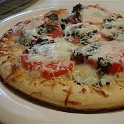

Pizza

Description
This is a recipe for pizza margherita
Ingredients
- 1 (12 inch) pizza crust or Italian bread shell
- 3 plum tomato (blank)s plum tomatoes, thinly sliced
- ⅓ cup BUITONI® Refrigerated Pesto with Basil
- 1½ cups shredded mozzarella cheese
- ½ teaspoon crushed red pepper
Steps
- Preheat oven to 450 F. Place pizza crust on baking sheet.
-
Spread pesto over pizza crust. Arrange tomatoes over pesto. Sprinkle
with cheese and crushed red pepper.
-
Bake for 10 to 12 minutes or until cheese is melted and crust is golden
brown. Cut into wedges.